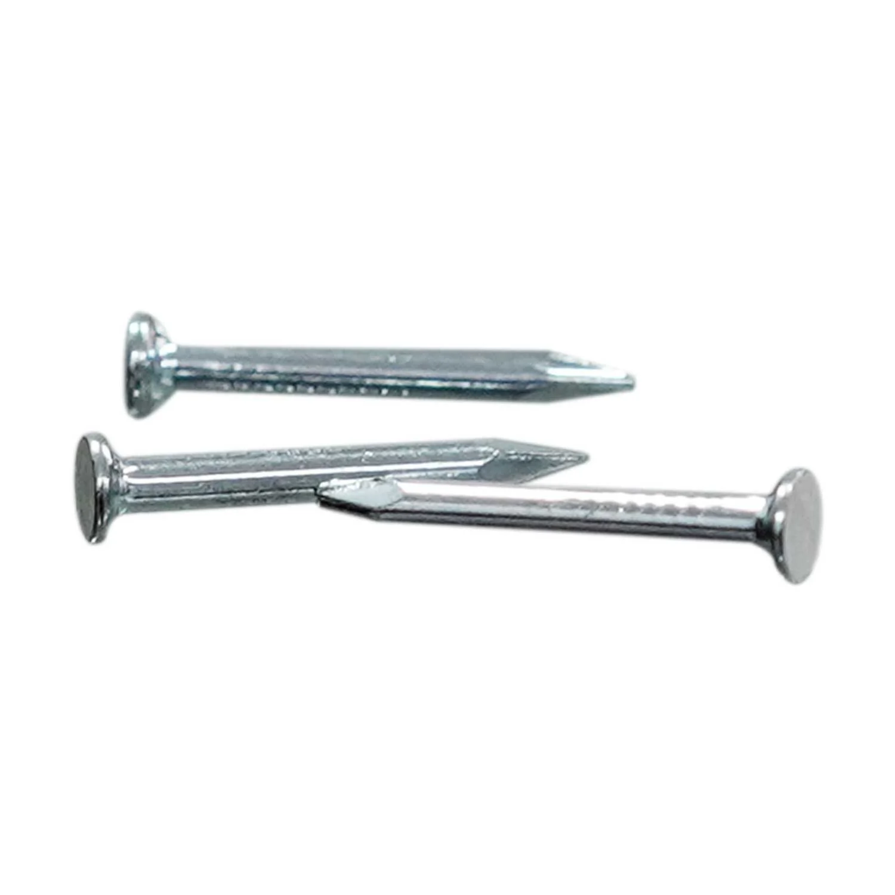

 ตะปู เป็นอุปกรณ์ที่ทำมาจากโลหะ มีลักษณะแข็ง ปลายแหลม รูปร่างคล้ายเข็ม ตะปูส่วนมากทำมาจากเหล็ก มักใช้สำหรับการยึด ตรึง หรือเพื่อติดวัตถุชนิดต่าง ๆ
ในงานไม้ งานก่อสร้าง และงานวิศวกรรม ตะปูมักถูกใช้งานร่วมกับค้อน โดยใช้ค้อนในการตีหรือตอกเพื่อดันตะปูให้ผ่านเข้าไปในวัตถุที่ต้องการ จะขาดอย่างใดอย่างหนึ่งไม่ได้
ประเภทของตะปู
คุณสมบัติ
ข้อแนะนำในการตอกตะปู
ประเภทของตะปู
ตะปูเป็นอุปกรณ์ที่ผลิตมาจากโลหะ จะมีลักษณะที่แข็ง ปลายแหลม ส่วนมากจะทำมาจากเหล็กช่างมักจะใช้ตะปูในการยึด ตรึง ติดกับวัตถุต่างๆ ที่เกี่ยวกับงานไม้และอุปกรณ์ช่างที่มักใช้ด้วยกันคือ ค้อนในการใช้ตีหรือตอกเพื่อดันตะปูเข้าไป
ซึ่งตะปูมีหลายแบบ ดังนั้นการเลือกซื้อตะปูให้เหมาะสมกับงานจึงเป็นสิ่งสำคัญ ดังนี้
1. ตะปูตอกไม้ จะมีหลายขนาด และมีขนาดความยาวที่ไม่เท่ากัน แข็งแรงทนทาน จะทำด้วยลวดเหล็กชุบสังกะสีกันสนิม จะสามารถแบ่งได้อีกหลายขนาดขึ้นกับลักษณะการใช้งาน นิยมใช้สำหรับงานไม้และงานก่อสร้างทุกชนิด
2. ตะปูเข็ม มีขนาดเล็ก ปลายแหลม ตะปูชนิดนี้เหมาะกับการใช้ในการประดิดประดอย เช่น การทำกระทง เพราะเป็นงานที่ต้องการความสวยงาม ความเนี๊ยบ เพราะจะไม่เห็นหัวตะปู
3. ตะปูตอกสังกะสี จะมีลักษณะคล้ายร่ม เหมาะสำหรับงานเกี่ยวกับการตอกยึดสังกะสี จะทำด้วยเหล็กชุบสังกะสีกันสนิม หัวตะปูจะใหญ่ มีลักษณะกลมมีความโค้งเล็กน้อยเพื่อช่วยยึดสังกะสีให้ติดกับโครง ไม่ให้หลุดง่ายเมื่อเจอแรงลม
4. ตะปูคอนกรีต ลักษณะจะคล้ายๆ กับตะปูตอกไม้ แต่มีความแข็งแรงกว่า ไว้ใช้สำหรับตอกยึดไม้เข้ากับคอนกรีตเข้าด้วยกัน ตะปูคอนกรีตจะทำจากเหล็กพิเศษ ตัวตะปูจะมีความแข็ง งอได้ยาก ช่วงลำตัวของตะปูคอนกรีตจะเป็นร่องเล็กๆ เพื่อเพิ่มความแข็งตัวตะปู
5. ตะปูตีกิ๊บเคเบิล ส่วนใหญ่จะขายเป็นชุด คือ มีตะปู และกิ๊บ ไว้สำหรับใช้ยึดเก็บงานสายเคเบิลบนผนัง
6. ตะปูตีกิ๊บสายไฟ ลักษณะการใช้งานคล้ายกับตะปูกิ๊บตีเคเบิล แต่จะขายตะปู และกิ๊บแยกกัน ไว้สำหรับใช้ยึดเก็บงานสายไฟบนผนัง
Back to top
คุณสมบัติ
-ผลิตจากเหล็กคุณภาพ ทนต่อแรงกระแทกและแรงดันของโครงสร้าง
-ส่วนของใต้หัวตะปูมีร่อง เพื่อช่วยเสริมการยึดติดชิ้นงานมากยิ่งขึ้น
-ปลายตะปูมีความแหลมคม ช่วยให้เจาะเข้าชิ้นงานได้ง่ายกว่าเดิม
Back to top
ข้อแนะนำในการตอกตะปู
ถ้านำตะปูตอกไปกับผนังปูนตรงๆ ผนังมักจะกะเทาะ ต้องเสียเงินในการซ่อมหรือทาสีใหม่ แต่ถ้านำกระดาษแข็งหรือกระดาษลังนำมาพับซักหนึ่งทบให้หนาๆ ขนาดพอให้ดูสวยงาม
เสร็จแล้ววางรองที่ปลายแหลมของตะปู จากนั้นก็ตอกลงไปบนผนังปูน ปูนก็จะไม่กะเทาะออกมาหรือถ้ามีก็น้อยมาก และอีกวิธีคือวัสดุอีกชนิดหนึ่งที่สามารถทำให้ปูนไม่กะเทาะได้ก็คือ
เทปใส ให้นำเทปใสไปปิดตรงตำแหน่งที่ต้องการตอก จำนวน 2 แผ่น แล้วค่อยตอกตะปูลงบนแผ่นใส ก็จะช่วยให้ปูนไม่แตกหรือกะเทาะสีหลุดร่วงได้ เหมาะอย่างยิ่งสำหรับผู้เช่าหอพักหรืออาคารอยู่ ก่อนเราจะคืนห้องก็แค่ใช้ปูนยาแนวอุดแค่นั้น
Back to top
แหล่งที่มา : https://th.wikipedia.org/wiki/%E0%B8%95%E0%B8%B0%E0%B8%9B%E0%B8%B9
แหล่งที่มา : https://www.wongguru.com/content/5615/%E0%B8%95%E0%B8%B0%E0%B8%9B%E0%B8%B9-%E0%B8%95%E0%B8%B0%E0%B8%9B%E0%B8%B9%E0%B8%95%E0%B8%AD%E0%B8%81%E0%B9%84%E0%B8%A1%E0%B9%89
-%E0%B8%A7%E0%B8%B4%E0%B8%98%E0%B8%B5%E0%B8%81%E0%B8%B2%E0%B8%A3%E0%B9%80%E0%B8%A5%E0%B8%B7%E0%B8%AD%E0%B8%81%E0%B9%83%E0%B8%8A%E0%B9%89%E0%B8%87%E0%B8%B2%E0%B8%99%E0%B8%95%E0%B8%B0%E0%B8%9B%E0%B8%B9
%E0%B9%81%E0%B8%95%E0%B9%88%E0%B8%A5%E0%B8%B0%E0%B8%9B%E0%B8%A3%E0%B8%B0%E0%B9%80%E0%B8%A0%E0%B8%97
แหล่งที่มา : https://www.homepro.co.th/p/1174336